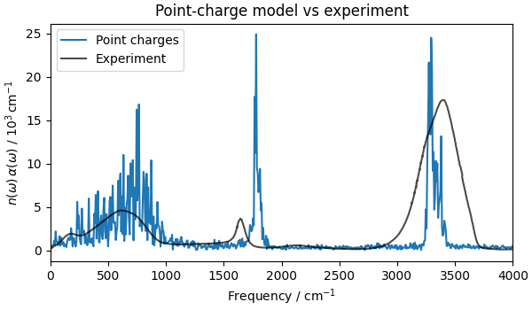
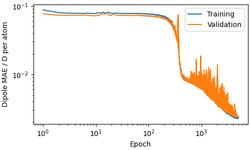
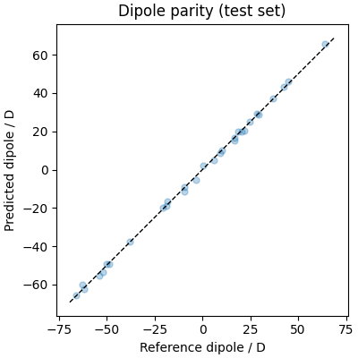
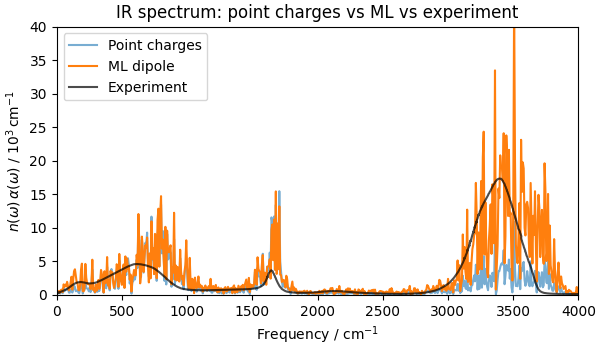

Note
Go to the end to download the full example code.
Machine-learned dipoles and infrared spectroscopy of liquid water¶
- Authors:
Paolo Pegolo @ppegolo
This recipe shows how to combine a machine-learning interatomic potential (MLIP) with a machine-learned dipole model to compute the infrared (IR) spectrum of liquid water.
The workflow has four steps:
Point-charge baseline: compute the dipole time series from a TIP3P trajectory with fixed atomic charges; identify where this approach fails.
Training: fine-tune the PET-MAD-XS foundational MLIP on a small water dataset with an added dipole output head, using metatrain.
Simulation: run a new NVT trajectory driven by the joint MLIP.
Spectrum: evaluate ML dipoles along the trajectory and compare against the point-charge baseline and experiment.
Along the way we discuss equivariance, the symmetry constraint that any dipole model must satisfy, and quantify how well an unconstrained architecture satisfies it.
# sphinx_gallery_thumbnail_number = 4
from zipfile import ZipFile
import ase.build
import ase.io
from ase.geometry import get_distances
import chemiscope
import matplotlib.pyplot as plt
import numpy as np
import scipy.signal
import yaml
from atomistic_cookbook_utils import download_with_retry, run_command
from scipy.spatial.transform import Rotation
from metatomic.torch import ModelOutput
from metatomic.torch.ase_calculator import MetatomicCalculator
Data and model downloads¶
All data and model files are included in a single zip archive, which we download and extract:
download_with_retry(
"https://github.com/ppegolo/labcosmo_ictp_school/raw/refs/heads/tmp/water-ir-spectrum.zip", # noqa: E501
"water-ir-spectrum.zip",
)
with ZipFile("water-ir-spectrum.zip", "r") as z:
z.extractall(".")
Fixed point-charge dipole model for liquid water¶
A simple (and simplistic) dipole model assigns fixed partial charges to each atom. We use the TIP3P values \(q_\mathrm{H} = +0.417\,e\) and \(q_\mathrm{O} = -0.834\,e\), which match the force-field charges used in the MD simulation. The total dipole of the simulation cell is then
Note that, as long as charge neutrality is maintained (\(q_\mathrm{O} = -2\,q_\mathrm{H}\)), rescaling all charges by a factor \(k\) maps \(\boldsymbol{\mu}\) to \(k\boldsymbol{\mu}\) and therefore the IR spectrum by \(k^2\). This is a global rescaling that cannot change the relative intensities between peaks, so tuning the charge value is not a meaningful way to improve the shape of the spectrum. For systems that carry a net ionic current (electrolytes, ionic liquids), the zero-frequency limit of the spectrum is proportional to the ionic conductivity, which does depend on the actual transported charge: in that case only formal (oxidation-number) charges yield the correct DC limit, even though they produce incorrect intensities. Here, pure water has zero ionic conductivity, so the choice of charge value is truly nothing else than an overall scale factor.
Under periodic boundary conditions the raw sum \(\sum_i q_i \mathbf{r}_i\) is
gauge-dependent: shifting a
molecule across the simulation box by a lattice vector changes its value. To get a
physically meaningful cell dipole, we unwrap each hydrogen into the minimum-image
frame of its bonded oxygen before summing, using ASE’s minimum-image convention
(mic=True), which handles any cell shape.
def compute_pc_dipole(
atoms: ase.Atoms, q_H: float = 0.417, q_O: float = -0.834
) -> np.ndarray:
"""
Total point-charge dipole of a periodic water box (e·Å).
It assumes that each O is bonded to exactly two H's, and that each water molecule is
overall charge-neutral.
:param atoms: ASE Atoms object containing the water box
:param q_H: partial charge on each H atom in units of e
:param q_O: partial charge on each O atom in units of e
:returns: total cell dipole as a 3D vector in e·Å
"""
q_sum = q_O + 2 * q_H
assert abs(q_sum) < 1e-6, "Net charge is not zero"
syms = np.array(atoms.get_chemical_symbols())
i_O = np.where(syms == "O")[0]
i_H = np.where(syms == "H")[0]
# D_vec: shape (n_O, n_H, 3), displacement vectors pointing from O to H
# D_len: shape (n_O, n_H), scalar distances
D_vec, D_len = get_distances(
p1=atoms.positions[i_O], p2=atoms.positions[i_H], cell=atoms.cell, pbc=atoms.pbc
)
# For each H (axis 1), find the index of its nearest O (axis 0)
nearest_o = np.argmin(D_len, axis=0) # (n_H,)
# Extract the minimum-image O->H bond vectors
bond_vec = D_vec[nearest_o, np.arange(len(i_H))] # (n_H, 3)
# If the molecules were not neutral, the expression would be
# dipole = (q_O + 2 * q_H) * atoms.positions[i_O].sum(axis=0)
# + q_H * bond_vec.sum(axis=0)
# The simplified expression for neutral molecules is
return q_H * bond_vec.sum(axis=0)
By the fluctuation-dissipation theorem, the linear infrared absorption spectrum is proportional to the Fourier transform of the equilibrium dipole-dipole autocorrelation function. In practice this is most easily computed via the power spectral density of the total cell dipole:
where \(\tilde{S}_{\boldsymbol{\mu}}\) is the isotropic two-sided power spectral density of \(\boldsymbol{\mu}(t)\), \(n(\omega)\) is the refractive index, and \(1/6 = (1/3) \times (1/2)\) combines the orientational average (liquid water is isotropic) with the cosine-transform convention. Given a dipole time series sampled at regular intervals, we can compute the power spectral density with scipy.signal.periodogram, which uses a fast Fourier transform (FFT) and is therefore very efficient even for long trajectories:
def ir_spectrum(
dipoles_eA: np.ndarray,
dt_fs: float,
volume_A3: float,
temperature_K: float = 300.0,
) -> tuple[np.ndarray, np.ndarray]:
"""IR absorption from a dipole time series.
:param dipoles_eA: total cell dipole in e·Å, shape ``(n_frames, 3)``
:param dt_fs: time between saved frames in fs
:param volume_A3: simulation box volume in ų
:param temperature_K: temperature in K
:returns: tuple with frequencies in cm⁻¹ and :math:`n(\\omega)\\alpha(\\omega)` in
10³ cm⁻¹
"""
c_cms = 2.99792458e10 # cm/s
kb_J = 1.380649e-23 # J/K
e_C = 1.602176634e-19 # C
A_m = 1e-10 # Å to m
# Convert dipole to SI (C·m)
mu_Cm = dipoles_eA * e_C * A_m
vol_m3 = volume_A3 * A_m**3
f, S = scipy.signal.periodogram(mu_Cm, fs=1.0, detrend="constant", axis=0)
S = S.sum(axis=1) # mu.mu dot product: sum over Cartesian components
S[1:-1] *= 0.5 # undo scipy's one-sided doubling: recover the two-sided PSD
S *= dt_fs * 1e-15 # normalise to physical time step (s)
freqs_hz = f / (dt_fs * 1e-15)
freqs_cm = freqs_hz / c_cms
omega = 2 * np.pi * freqs_hz
# n(ω) α(ω) = ω² S(ω) / (6 V k_B T ε₀ c) [cm⁻¹]
# the 1/6 = (1/3 orientational average) × (1/2 one-sided cosine transform)
eps0 = 8.854187817e-12
prefactor = omega**2 / (6.0 * vol_m3 * kb_J * temperature_K * eps0 * c_cms)
alpha = prefactor * S * 1e-3 # cm⁻¹ to 10³ cm⁻¹
return freqs_cm, alpha
We compute the spectrum from a 5 ps production trajectory (after 1 ps of
equilibration) at 300 K (canonical NVT, CSVR
thermostat, flexible TIP3P force field), giving a frequency resolution of ~7 cm⁻¹ (the
minimum resolvable frequency is the inverse of the total simulation time, i.e. 1/(5
ps) = 0.2 THz, or around 6.7 cm⁻¹). The trajectory is generated by running LAMMPS with
in_tip3p.lmp:
units real
atom_style full
special_bonds lj/coul 0.0 0.0 0.0
variable seed index 24680
variable t_target equal 300.0
variable tdamp equal 100*dt
variable nequil equal 2000 # equilibration: 2000 * 0.5 fs = 1 ps
variable nprod equal 10000 # production: 10000 * 0.5 fs = 5 ps
variable dump_every equal 4 # dump every 4 steps = 2 fs
read_data data/initial.data
pair_style lj/cut/coul/long 9.0
kspace_style ewald 1.0e-6
pair_modify tail yes
pair_coeff 1 1 0.1020 3.188
pair_coeff 1 2 0.0 1.0
pair_coeff 2 2 0.0 1.0
bond_style harmonic
bond_coeff 1 450.0 0.9572
angle_style harmonic
angle_coeff 1 55.0 104.52
set type 1 charge -0.834
set type 2 charge 0.417
timestep 0.5
neighbor 2.0 bin
neigh_modify every 1 delay 0 check yes
thermo_style custom step temp press density etotal pe ke ebond eangle evdwl ecoul elong
thermo 1000
# Energy minimization to remove bad contacts
min_style cg
minimize 1.0e-4 1.0e-6 1000 10000
velocity all create ${t_target} ${seed} mom yes rot yes dist gaussian
velocity all zero linear
reset_timestep 0
# Equilibration (no dump)
fix nve_int all nve
fix thermostat all temp/csvr ${t_target} ${t_target} ${tdamp} ${seed}
run ${nequil}
# Production (dump every 2 fs)
dump traj all custom ${dump_every} tip3p.lammpstrj id mol type xu yu zu
dump_modify traj sort id
run ${nprod}
and it’s run with:
run_command("lmp -in in_tip3p.lmp", print_output=True)
LAMMPS (10 Sep 2025 - Development - patch_10Sep2025-734-ga1c7f5baba)
OMP_NUM_THREADS environment is not set. Defaulting to 1 thread.
using 1 OpenMP thread(s) per MPI task
Reading data file ...
orthogonal box = (0 0 0) to (15.6 15.6 15.6)
1 by 1 by 1 MPI processor grid
reading atoms ...
384 atoms
reading velocities ...
384 velocities
scanning bonds ...
2 = max bonds/atom
scanning angles ...
1 = max angles/atom
orthogonal box = (0 0 0) to (15.6 15.6 15.6)
1 by 1 by 1 MPI processor grid
reading bonds ...
256 bonds
reading angles ...
128 angles
Finding 1-2 1-3 1-4 neighbors ...
special bond factors lj: 0 0 0
special bond factors coul: 0 0 0
2 = max # of 1-2 neighbors
1 = max # of 1-3 neighbors
1 = max # of 1-4 neighbors
2 = max # of special neighbors
special bonds CPU = 0.000 seconds
read_data CPU = 0.004 seconds
Setting atom values ...
128 settings made for charge
Setting atom values ...
256 settings made for charge
Ewald initialization ...
using 12-bit tables for long-range coulomb
G vector (1/distance) = 0.37198615
estimated absolute RMS force accuracy = 0.00033302913
estimated relative force accuracy = 1.0029073e-06
KSpace vectors: actual max1d max3d = 709 7 1687
kxmax kymax kzmax = 7 7 7
Generated 0 of 1 mixed pair_coeff terms from geometric mixing rule
Neighbor list info ...
update: every = 1 steps, delay = 0 steps, check = yes
max neighbors/atom: 2000, page size: 100000
master list distance cutoff = 11
ghost atom cutoff = 11
binsize = 5.5, bins = 3 3 3
1 neighbor lists, perpetual/occasional/extra = 1 0 0
(1) pair lj/cut/coul/long, perpetual
attributes: half, newton on
pair build: half/bin/newton
stencil: half/bin/3d
bin: standard
Setting up cg style minimization ...
Unit style : real
Current step : 0
Per MPI rank memory allocation (min/avg/max) = 20.23 | 20.23 | 20.23 Mbytes
Step Temp Press Density TotEng PotEng KinEng E_bond E_angle E_vdwl E_coul E_long
0 0 6042.9195 1.0086236 17.568067 17.568067 0 3.6619754e-09 1.7284233e-10 -48.615046 9116.7794 -9050.5963
181 0 -3756.4254 1.0086236 -1653.1096 -1653.1096 0 82.780888 43.389309 425.96638 7092.2537 -9297.4998
Loop time of 1.1355 on 1 procs for 181 steps with 384 atoms
100.0% CPU use with 1 MPI tasks x 1 OpenMP threads
Minimization stats:
Stopping criterion = energy tolerance
Energy initial, next-to-last, final =
17.5680669678197 -1652.97946951365 -1653.10959478015
Force two-norm initial, final = 321.03407 16.293241
Force max component initial, final = 36.096223 2.1110701
Final line search alpha, max atom move = 0.020702257 0.043703917
Iterations, force evaluations = 181 340
MPI task timing breakdown:
Section | min time | avg time | max time |%varavg| %total
---------------------------------------------------------------
Pair | 0.70274 | 0.70274 | 0.70274 | 0.0 | 61.89
Bond | 0.0031417 | 0.0031417 | 0.0031417 | 0.0 | 0.28
Kspace | 0.4056 | 0.4056 | 0.4056 | 0.0 | 35.72
Neigh | 0.016024 | 0.016024 | 0.016024 | 0.0 | 1.41
Comm | 0.0057805 | 0.0057805 | 0.0057805 | 0.0 | 0.51
Output | 0 | 0 | 0 | 0.0 | 0.00
Modify | 0 | 0 | 0 | 0.0 | 0.00
Other | | 0.002212 | | | 0.19
Nlocal: 384 ave 384 max 384 min
Histogram: 1 0 0 0 0 0 0 0 0 0
Nghost: 5011 ave 5011 max 5011 min
Histogram: 1 0 0 0 0 0 0 0 0 0
Neighs: 107860 ave 107860 max 107860 min
Histogram: 1 0 0 0 0 0 0 0 0 0
Total # of neighbors = 107860
Ave neighs/atom = 280.88542
Ave special neighs/atom = 2
Neighbor list builds = 6
Dangerous builds = 0
Ewald initialization ...
using 12-bit tables for long-range coulomb
G vector (1/distance) = 0.37198615
estimated absolute RMS force accuracy = 0.00033302913
estimated relative force accuracy = 1.0029073e-06
KSpace vectors: actual max1d max3d = 709 7 1687
kxmax kymax kzmax = 7 7 7
Generated 0 of 1 mixed pair_coeff terms from geometric mixing rule
Setting up Verlet run ...
Unit style : real
Current step : 0
Time step : 0.5
Per MPI rank memory allocation (min/avg/max) = 19.11 | 19.11 | 19.11 Mbytes
Step Temp Press Density TotEng PotEng KinEng E_bond E_angle E_vdwl E_coul E_long
0 300 367.52459 1.0086236 -1310.6145 -1653.1096 342.49507 82.780888 43.389309 425.96638 7092.2537 -9297.4998
1000 305.34641 -618.76697 1.0086236 -934.41933 -1283.0181 348.5988 139.26516 84.623295 322.71675 7462.6257 -9292.249
2000 318.63916 2087.0242 1.0086236 -909.48526 -1273.2597 363.77447 129.44604 75.774757 332.68453 7480.158 -9291.323
Loop time of 5.36634 on 1 procs for 2000 steps with 384 atoms
Performance: 16.100 ns/day, 1.491 hours/ns, 372.693 timesteps/s, 143.114 katom-step/s
100.0% CPU use with 1 MPI tasks x 1 OpenMP threads
MPI task timing breakdown:
Section | min time | avg time | max time |%varavg| %total
---------------------------------------------------------------
Pair | 2.8285 | 2.8285 | 2.8285 | 0.0 | 52.71
Bond | 0.01629 | 0.01629 | 0.01629 | 0.0 | 0.30
Kspace | 2.3803 | 2.3803 | 2.3803 | 0.0 | 44.36
Neigh | 0.091378 | 0.091378 | 0.091378 | 0.0 | 1.70
Comm | 0.034513 | 0.034513 | 0.034513 | 0.0 | 0.64
Output | 3.9704e-05 | 3.9704e-05 | 3.9704e-05 | 0.0 | 0.00
Modify | 0.010229 | 0.010229 | 0.010229 | 0.0 | 0.19
Other | | 0.005104 | | | 0.10
Nlocal: 384 ave 384 max 384 min
Histogram: 1 0 0 0 0 0 0 0 0 0
Nghost: 5060 ave 5060 max 5060 min
Histogram: 1 0 0 0 0 0 0 0 0 0
Neighs: 108155 ave 108155 max 108155 min
Histogram: 1 0 0 0 0 0 0 0 0 0
Total # of neighbors = 108155
Ave neighs/atom = 281.65365
Ave special neighs/atom = 2
Neighbor list builds = 34
Dangerous builds = 0
Ewald initialization ...
using 12-bit tables for long-range coulomb
G vector (1/distance) = 0.37198615
estimated absolute RMS force accuracy = 0.00033302913
estimated relative force accuracy = 1.0029073e-06
KSpace vectors: actual max1d max3d = 709 7 1687
kxmax kymax kzmax = 7 7 7
Generated 0 of 1 mixed pair_coeff terms from geometric mixing rule
Setting up Verlet run ...
Unit style : real
Current step : 2000
Time step : 0.5
Per MPI rank memory allocation (min/avg/max) = 19.11 | 19.11 | 19.11 Mbytes
Step Temp Press Density TotEng PotEng KinEng E_bond E_angle E_vdwl E_coul E_long
2000 318.63916 2087.0242 1.0086236 -909.48526 -1273.2597 363.77447 129.44604 75.774757 332.68453 7480.158 -9291.323
3000 297.44317 3753.2438 1.0086236 -1004.9892 -1344.5652 339.57607 122.90188 74.748228 377.92898 7375.8274 -9295.9718
4000 296.16114 4260.793 1.0086236 -1000.3441 -1338.4565 338.11244 127.88525 72.747457 369.84869 7383.9459 -9292.8838
5000 298.08711 -1173.5316 1.0086236 -971.14551 -1311.4567 340.31122 125.46752 85.241099 321.91837 7450.6743 -9294.758
6000 294.84173 -3875.4421 1.0086236 -991.83978 -1328.4459 336.60613 142.80954 70.755649 351.50991 7399.3134 -9292.8344
7000 296.45979 -5553.3703 1.0086236 -972.59899 -1311.0524 338.45339 161.2721 73.313238 356.24391 7390.405 -9292.2866
8000 320.10021 -3888.9803 1.0086236 -929.94359 -1295.3861 365.44249 147.69094 74.830382 335.68555 7438.2767 -9291.8696
9000 302.59167 -5162.9434 1.0086236 -965.87423 -1311.3281 345.45386 159.99801 76.127183 333.91545 7413.1893 -9294.5581
10000 302.01101 -5516.2862 1.0086236 -962.61179 -1307.4027 344.79094 154.94608 76.88971 346.30408 7407.1264 -9292.669
11000 280.22856 -3019.1832 1.0086236 -986.90238 -1306.8254 319.92301 154.04111 77.76947 350.46493 7403.1225 -9292.2234
12000 307.47583 -1813.6682 1.0086236 -952.08597 -1303.1158 351.02985 154.20667 77.89724 368.7088 7386.4893 -9290.4179
Loop time of 29.5026 on 1 procs for 10000 steps with 384 atoms
Performance: 14.643 ns/day, 1.639 hours/ns, 338.953 timesteps/s, 130.158 katom-step/s
99.8% CPU use with 1 MPI tasks x 1 OpenMP threads
MPI task timing breakdown:
Section | min time | avg time | max time |%varavg| %total
---------------------------------------------------------------
Pair | 16.184 | 16.184 | 16.184 | 0.0 | 54.86
Bond | 0.092372 | 0.092372 | 0.092372 | 0.0 | 0.31
Kspace | 11.792 | 11.792 | 11.792 | 0.0 | 39.97
Neigh | 0.50116 | 0.50116 | 0.50116 | 0.0 | 1.70
Comm | 0.17459 | 0.17459 | 0.17459 | 0.0 | 0.59
Output | 0.67773 | 0.67773 | 0.67773 | 0.0 | 2.30
Modify | 0.052012 | 0.052012 | 0.052012 | 0.0 | 0.18
Other | | 0.02927 | | | 0.10
Nlocal: 384 ave 384 max 384 min
Histogram: 1 0 0 0 0 0 0 0 0 0
Nghost: 4945 ave 4945 max 4945 min
Histogram: 1 0 0 0 0 0 0 0 0 0
Neighs: 107998 ave 107998 max 107998 min
Histogram: 1 0 0 0 0 0 0 0 0 0
Total # of neighbors = 107998
Ave neighs/atom = 281.24479
Ave special neighs/atom = 2
Neighbor list builds = 185
Dangerous builds = 0
Total wall time: 0:00:36
CompletedProcess(args=['lmp', '-in', 'in_tip3p.lmp'], returncode=0, stdout='LAMMPS (10 Sep 2025 - Development - patch_10Sep2025-734-ga1c7f5baba)\nOMP_NUM_THREADS environment is not set. Defaulting to 1 thread.\n using 1 OpenMP thread(s) per MPI task\nReading data file ...\n orthogonal box = (0 0 0) to (15.6 15.6 15.6)\n 1 by 1 by 1 MPI processor grid\n reading atoms ...\n 384 atoms\n reading velocities ...\n 384 velocities\n scanning bonds ...\n 2 = max bonds/atom\n scanning angles ...\n 1 = max angles/atom\n orthogonal box = (0 0 0) to (15.6 15.6 15.6)\n 1 by 1 by 1 MPI processor grid\n reading bonds ...\n 256 bonds\n reading angles ...\n 128 angles\nFinding 1-2 1-3 1-4 neighbors ...\n special bond factors lj: 0 0 0 \n special bond factors coul: 0 0 0 \n 2 = max # of 1-2 neighbors\n 1 = max # of 1-3 neighbors\n 1 = max # of 1-4 neighbors\n 2 = max # of special neighbors\n special bonds CPU = 0.000 seconds\n read_data CPU = 0.004 seconds\nSetting atom values ...\n 128 settings made for charge\nSetting atom values ...\n 256 settings made for charge\nEwald initialization ...\n using 12-bit tables for long-range coulomb\n G vector (1/distance) = 0.37198615\n estimated absolute RMS force accuracy = 0.00033302913\n estimated relative force accuracy = 1.0029073e-06\n KSpace vectors: actual max1d max3d = 709 7 1687\n kxmax kymax kzmax = 7 7 7\nGenerated 0 of 1 mixed pair_coeff terms from geometric mixing rule\nNeighbor list info ...\n update: every = 1 steps, delay = 0 steps, check = yes\n max neighbors/atom: 2000, page size: 100000\n master list distance cutoff = 11\n ghost atom cutoff = 11\n binsize = 5.5, bins = 3 3 3\n 1 neighbor lists, perpetual/occasional/extra = 1 0 0\n (1) pair lj/cut/coul/long, perpetual\n attributes: half, newton on\n pair build: half/bin/newton\n stencil: half/bin/3d\n bin: standard\nSetting up cg style minimization ...\n Unit style : real\n Current step : 0\nPer MPI rank memory allocation (min/avg/max) = 20.23 | 20.23 | 20.23 Mbytes\n Step Temp Press Density TotEng PotEng KinEng E_bond E_angle E_vdwl E_coul E_long \n 0 0 6042.9195 1.0086236 17.568067 17.568067 0 3.6619754e-09 1.7284233e-10 -48.615046 9116.7794 -9050.5963 \n 181 0 -3756.4254 1.0086236 -1653.1096 -1653.1096 0 82.780888 43.389309 425.96638 7092.2537 -9297.4998 \nLoop time of 1.1355 on 1 procs for 181 steps with 384 atoms\n\n100.0% CPU use with 1 MPI tasks x 1 OpenMP threads\n\nMinimization stats:\n Stopping criterion = energy tolerance\n Energy initial, next-to-last, final = \n 17.5680669678197 -1652.97946951365 -1653.10959478015\n Force two-norm initial, final = 321.03407 16.293241\n Force max component initial, final = 36.096223 2.1110701\n Final line search alpha, max atom move = 0.020702257 0.043703917\n Iterations, force evaluations = 181 340\n\nMPI task timing breakdown:\nSection | min time | avg time | max time |%varavg| %total\n---------------------------------------------------------------\nPair | 0.70274 | 0.70274 | 0.70274 | 0.0 | 61.89\nBond | 0.0031417 | 0.0031417 | 0.0031417 | 0.0 | 0.28\nKspace | 0.4056 | 0.4056 | 0.4056 | 0.0 | 35.72\nNeigh | 0.016024 | 0.016024 | 0.016024 | 0.0 | 1.41\nComm | 0.0057805 | 0.0057805 | 0.0057805 | 0.0 | 0.51\nOutput | 0 | 0 | 0 | 0.0 | 0.00\nModify | 0 | 0 | 0 | 0.0 | 0.00\nOther | | 0.002212 | | | 0.19\n\nNlocal: 384 ave 384 max 384 min\nHistogram: 1 0 0 0 0 0 0 0 0 0\nNghost: 5011 ave 5011 max 5011 min\nHistogram: 1 0 0 0 0 0 0 0 0 0\nNeighs: 107860 ave 107860 max 107860 min\nHistogram: 1 0 0 0 0 0 0 0 0 0\n\nTotal # of neighbors = 107860\nAve neighs/atom = 280.88542\nAve special neighs/atom = 2\nNeighbor list builds = 6\nDangerous builds = 0\nEwald initialization ...\n using 12-bit tables for long-range coulomb\n G vector (1/distance) = 0.37198615\n estimated absolute RMS force accuracy = 0.00033302913\n estimated relative force accuracy = 1.0029073e-06\n KSpace vectors: actual max1d max3d = 709 7 1687\n kxmax kymax kzmax = 7 7 7\nGenerated 0 of 1 mixed pair_coeff terms from geometric mixing rule\nSetting up Verlet run ...\n Unit style : real\n Current step : 0\n Time step : 0.5\nPer MPI rank memory allocation (min/avg/max) = 19.11 | 19.11 | 19.11 Mbytes\n Step Temp Press Density TotEng PotEng KinEng E_bond E_angle E_vdwl E_coul E_long \n 0 300 367.52459 1.0086236 -1310.6145 -1653.1096 342.49507 82.780888 43.389309 425.96638 7092.2537 -9297.4998 \n 1000 305.34641 -618.76697 1.0086236 -934.41933 -1283.0181 348.5988 139.26516 84.623295 322.71675 7462.6257 -9292.249 \n 2000 318.63916 2087.0242 1.0086236 -909.48526 -1273.2597 363.77447 129.44604 75.774757 332.68453 7480.158 -9291.323 \nLoop time of 5.36634 on 1 procs for 2000 steps with 384 atoms\n\nPerformance: 16.100 ns/day, 1.491 hours/ns, 372.693 timesteps/s, 143.114 katom-step/s\n100.0% CPU use with 1 MPI tasks x 1 OpenMP threads\n\nMPI task timing breakdown:\nSection | min time | avg time | max time |%varavg| %total\n---------------------------------------------------------------\nPair | 2.8285 | 2.8285 | 2.8285 | 0.0 | 52.71\nBond | 0.01629 | 0.01629 | 0.01629 | 0.0 | 0.30\nKspace | 2.3803 | 2.3803 | 2.3803 | 0.0 | 44.36\nNeigh | 0.091378 | 0.091378 | 0.091378 | 0.0 | 1.70\nComm | 0.034513 | 0.034513 | 0.034513 | 0.0 | 0.64\nOutput | 3.9704e-05 | 3.9704e-05 | 3.9704e-05 | 0.0 | 0.00\nModify | 0.010229 | 0.010229 | 0.010229 | 0.0 | 0.19\nOther | | 0.005104 | | | 0.10\n\nNlocal: 384 ave 384 max 384 min\nHistogram: 1 0 0 0 0 0 0 0 0 0\nNghost: 5060 ave 5060 max 5060 min\nHistogram: 1 0 0 0 0 0 0 0 0 0\nNeighs: 108155 ave 108155 max 108155 min\nHistogram: 1 0 0 0 0 0 0 0 0 0\n\nTotal # of neighbors = 108155\nAve neighs/atom = 281.65365\nAve special neighs/atom = 2\nNeighbor list builds = 34\nDangerous builds = 0\nEwald initialization ...\n using 12-bit tables for long-range coulomb\n G vector (1/distance) = 0.37198615\n estimated absolute RMS force accuracy = 0.00033302913\n estimated relative force accuracy = 1.0029073e-06\n KSpace vectors: actual max1d max3d = 709 7 1687\n kxmax kymax kzmax = 7 7 7\nGenerated 0 of 1 mixed pair_coeff terms from geometric mixing rule\nSetting up Verlet run ...\n Unit style : real\n Current step : 2000\n Time step : 0.5\nPer MPI rank memory allocation (min/avg/max) = 19.11 | 19.11 | 19.11 Mbytes\n Step Temp Press Density TotEng PotEng KinEng E_bond E_angle E_vdwl E_coul E_long \n 2000 318.63916 2087.0242 1.0086236 -909.48526 -1273.2597 363.77447 129.44604 75.774757 332.68453 7480.158 -9291.323 \n 3000 297.44317 3753.2438 1.0086236 -1004.9892 -1344.5652 339.57607 122.90188 74.748228 377.92898 7375.8274 -9295.9718 \n 4000 296.16114 4260.793 1.0086236 -1000.3441 -1338.4565 338.11244 127.88525 72.747457 369.84869 7383.9459 -9292.8838 \n 5000 298.08711 -1173.5316 1.0086236 -971.14551 -1311.4567 340.31122 125.46752 85.241099 321.91837 7450.6743 -9294.758 \n 6000 294.84173 -3875.4421 1.0086236 -991.83978 -1328.4459 336.60613 142.80954 70.755649 351.50991 7399.3134 -9292.8344 \n 7000 296.45979 -5553.3703 1.0086236 -972.59899 -1311.0524 338.45339 161.2721 73.313238 356.24391 7390.405 -9292.2866 \n 8000 320.10021 -3888.9803 1.0086236 -929.94359 -1295.3861 365.44249 147.69094 74.830382 335.68555 7438.2767 -9291.8696 \n 9000 302.59167 -5162.9434 1.0086236 -965.87423 -1311.3281 345.45386 159.99801 76.127183 333.91545 7413.1893 -9294.5581 \n 10000 302.01101 -5516.2862 1.0086236 -962.61179 -1307.4027 344.79094 154.94608 76.88971 346.30408 7407.1264 -9292.669 \n 11000 280.22856 -3019.1832 1.0086236 -986.90238 -1306.8254 319.92301 154.04111 77.76947 350.46493 7403.1225 -9292.2234 \n 12000 307.47583 -1813.6682 1.0086236 -952.08597 -1303.1158 351.02985 154.20667 77.89724 368.7088 7386.4893 -9290.4179 \nLoop time of 29.5026 on 1 procs for 10000 steps with 384 atoms\n\nPerformance: 14.643 ns/day, 1.639 hours/ns, 338.953 timesteps/s, 130.158 katom-step/s\n99.8% CPU use with 1 MPI tasks x 1 OpenMP threads\n\nMPI task timing breakdown:\nSection | min time | avg time | max time |%varavg| %total\n---------------------------------------------------------------\nPair | 16.184 | 16.184 | 16.184 | 0.0 | 54.86\nBond | 0.092372 | 0.092372 | 0.092372 | 0.0 | 0.31\nKspace | 11.792 | 11.792 | 11.792 | 0.0 | 39.97\nNeigh | 0.50116 | 0.50116 | 0.50116 | 0.0 | 1.70\nComm | 0.17459 | 0.17459 | 0.17459 | 0.0 | 0.59\nOutput | 0.67773 | 0.67773 | 0.67773 | 0.0 | 2.30\nModify | 0.052012 | 0.052012 | 0.052012 | 0.0 | 0.18\nOther | | 0.02927 | | | 0.10\n\nNlocal: 384 ave 384 max 384 min\nHistogram: 1 0 0 0 0 0 0 0 0 0\nNghost: 4945 ave 4945 max 4945 min\nHistogram: 1 0 0 0 0 0 0 0 0 0\nNeighs: 107998 ave 107998 max 107998 min\nHistogram: 1 0 0 0 0 0 0 0 0 0\n\nTotal # of neighbors = 107998\nAve neighs/atom = 281.24479\nAve special neighs/atom = 2\nNeighbor list builds = 185\nDangerous builds = 0\nTotal wall time: 0:00:36\n')
We can now load the trajectory and compute the point-charge dipole time series. The LAMMPS dump file contains atomic types (1 for O, 2 for H) but not chemical symbols, so we assign those based on the type array before computing the dipole.
type_map_pc = {1: "O", 2: "H"}
traj_pc = ase.io.read("tip3p.lammpstrj", index=":", format="lammps-dump-text")
for atoms in traj_pc:
atoms.set_chemical_symbols([type_map_pc[int(t)] for t in atoms.arrays["type"]])
atoms.set_pbc(True)
pc_timeseries = np.array([compute_pc_dipole(f) for f in traj_pc])
volume_A3 = float(np.abs(np.linalg.det(traj_pc[0].cell)))
DT_FS = 2.0 # time between saved frames (MD timestep × dump frequency), in fs
We use the ir_spectrum function defined above to compute the IR spectrum from the
dipole time series. The resulting frequencies and \(n(\omega)\,\alpha(\omega)\)
values are stored in freqs_pc and alpha_pc for plotting.
freqs_pc, alpha_pc = ir_spectrum(pc_timeseries, DT_FS, volume_A3)
As a benchmark we use the experimental IR spectrum of liquid H₂O at 25°C taken
from Bertie & Lan, Appl. Spectrosc. 50, 1047–1057
(1996). The file
data/IR_light_expt.txt has two columns: frequency in \(\mathrm{cm}^{-1}\)
and \(n(\omega)\,\alpha(\omega)\) in units of
\(10^{3}\,\mathrm{cm}^{-1}\), which is the same combination we just computed from
the simulated dipole time series, which makes the two directly comparable.
expt = np.loadtxt("data/IR_light_expt.txt")
fig, ax = plt.subplots(figsize=(6, 3.5), constrained_layout=True)
ax.plot(freqs_pc, alpha_pc, label="Point charges")
ax.plot(expt[:, 0], expt[:, 1], "k-", alpha=0.7, label="Experiment")
ax.set_xlim(0, 4000)
ax.set_xlabel(r"Frequency / cm$^{-1}$")
ax.set_ylabel(r"$n(\omega)\,\alpha(\omega)$ / $10^3\,\mathrm{cm}^{-1}$")
ax.legend()
ax.set_title("Point-charge model vs experiment")

Text(0.5, 1.0, 'Point-charge model vs experiment')
The point-charge model captures the main bands (the O–H stretch at ~3400 cm⁻¹, the H–O–H bend at ~1600 cm⁻¹, and the librational band at ~650 cm⁻¹) but gets their shapes wrong in two visible ways: the O–H stretch is narrower than the experimental band, and the bending mode is blue-shifted relative to experiment. The reason is that IR intensities and peak shapes are governed by dipole derivatives (dynamical, or Born effective, charges), not by static charges: a band’s intensity scales as \(|\partial\boldsymbol{\mu}/\partial Q|^2\) along its vibrational mode \(Q\). With fixed charges the only contribution to \(\partial\boldsymbol{\mu}/\partial Q\) is the rigid displacement of the charges, \(q\,\partial\mathbf{r}/\partial Q\). In reality the partial charges themselves change as a bond stretches, resulting in an intramolecular charge flux \(\partial q/\partial Q\) that a fixed-charge model omits entirely. The same charge-flux and induced-dipole effects shape the low-frequency intermolecular (librational and hindered-translational) bands, which the point-charge model therefore also misrepresents.
Equivariance and the dipole moment¶
The charge-flux effect discussed above calls for a model that learns the full electronic-structure response rather than relying on fixed charges. Before building one, it is worth understanding the key symmetry constraint any dipole model must satisfy.
The dipole moment \(\boldsymbol{\mu}\) of a molecule is a vector property: under a rotation \(R\) of the whole system, the dipole must rotate accordingly:
This is an example of covariance, in contrast to invariant quantities such as the energy, which are unchanged by rotation. Together, invariance and covariance are instances of a more general principle known as equivariance: a property is equivariant to a symmetry operation if it transforms in a well-defined way under that operation.
Some ML architectures guarantee equivariance under rotations and inversion by construction. Others, including PET (Point-Edge Transformer, a message-passing graph neural network with transformer attention), which we will fine-tune below, are unconstrained: equivariance is not built into the architecture but learned during training via data augmentation (each frame is shown to the model in random orientations). The resulting equivariance is therefore approximate. We will quantify the residual error explicitly later in the recipe. In return, unconstrained models are more flexible and can be very expressive, improving accuracy at equivalent computational cost.
To build intuition, we verify what exact equivariance looks like for a simple point-charge dipole: rotating the molecule must rotate the arrow by the same amount. This gives a visual reference for the approximate equivariance we will measure on the ML model later.
water = ase.build.molecule("H2O")
water.center(about=water.get_center_of_mass())
q_H, q_O = 0.417, -0.834 # TIP3P charges in units of e
np.random.seed(42)
rot_angles = np.random.uniform(0, 360, (12, 3))
rotated = []
for angles in rot_angles:
mol = water.copy()
R = Rotation.from_euler("xyz", angles, degrees=True).as_matrix()
mol.positions = mol.positions @ R.T
rotated.append(mol)
syms = mol.get_chemical_symbols()
pos = mol.positions
mu = sum((q_H if s == "H" else q_O) * p for s, p in zip(syms, pos))
mol.info["dipole"] = mu
arrows = chemiscope.ase_vectors_to_arrows(rotated, "dipole", scale=1)
arrows["parameters"]["global"]["color"] = "green"
chemiscope.show(
rotated,
shapes={"dipole": arrows},
mode="structure",
settings=chemiscope.quick_settings(
trajectory=True,
structure_settings={"shape": ["dipole"]},
),
)

Joint MLIP + dipole training with metatrain¶
We will now train a single neural network with two output heads that share the same atomic representation: an energy/forces (MLIP) head, which drives the molecular dynamics, and a dipole head, which provides the \(\boldsymbol{\mu}(t)\) time series needed for the IR spectrum. Because both heads are attached to the same backbone features, each structure in the dataset simultaneously constrains the potential-energy surface and the electric dipole, potentially making joint training more data-efficient than fitting two separate models.
PET-MAD-XS is a foundational MLIP
pre-trained on a diverse dataset of materials at r2SCAN meta-GGA level. Fine-tuning starts from
PET-MAD’s pre-trained weights, which already encode good atomic representations from
a broad training distribution, and continues training on our 654-frame water
dataset, rather than training from scratch. We also add a mtt::dipole output head
alongside the standard energy/forces; the new head is randomly initialized and trained
from scratch, but it benefits from the shared backbone features that are already
well-trained on the base dataset.
The finetune section in training tells metatrain to start from the pre-trained
model checkpoint (finetune.read_from) and fine-tune the energy head on the
new dataset. The energy/scan key sets the name of the fine-tuned head (called a
variant in metatomic). The LAMMPS input must reference this same name via
variant scan to select this head at inference time. The mtt::dipole head is
trained from scratch, with type: cartesian rank 1, meaning it is a Cartesian
vector.
device: cpu
seed: 0
architecture:
name: pet
training:
batch_size: 32
num_epochs: 5000
learning_rate: 5e-5
warmup_fraction: 0.0
scale_targets: true
finetune:
method: full
read_from: pet-mad-xs-v1.5.1.ckpt
inherit_heads:
energy/scan: energy
loss:
energy/scan:
weight: 0.001
gradients:
positions:
weight: 0.001
strain:
weight: 0.001
training_set:
systems:
read_from: water_mlip_dipole_data.xyz
reader: ase
length_unit: angstrom
targets:
energy/scan:
key: energy
quantity: energy
unit: eV
description: SCAN
forces:
key: forces
stress:
key: stress
mtt::dipole:
key: dft_dipole
description: SCAN
type:
cartesian:
rank: 1
validation_set: 0.05
test_set: 0.05
Note
Given the small dataset and the need to train a new dipole head, training takes a
few hours on a GPU. Therefore we provide the fine-tuned checkpoint in
pet-mad-xs-v1.5.0_SCAN_dipole.ckpt (downloaded above); the mtt train command
is shown for reference only.
mtt train options.yaml
We can monitor convergence by loading the loss log written during training.
train_log = np.genfromtxt(
"data/train.csv",
delimiter=",",
names=True,
dtype=None,
encoding="utf-8",
)[1:]
epochs = train_log["Epoch"].astype(float) + 1
train_mae = train_log["training_mttdipole_MAE_per_atom"].astype(float)
val_mae = train_log["validation_mttdipole_MAE_per_atom"].astype(float)
fig, ax = plt.subplots(figsize=(5, 3), constrained_layout=True)
ax.loglog(epochs, train_mae, label="Training")
ax.loglog(epochs, val_mae, label="Validation")
ax.set_xlabel("Epoch")
# the per_atom suffix means metatrain divides by the number of atoms for consistent
# loss scaling; here all frames are the same box of water so it is a constant factor
ax.set_ylabel("Dipole MAE / D per atom")
ax.legend()

<matplotlib.legend.Legend object at 0x7f67eb4ad2b0>
Model evaluation on the test set¶
metatrain holds out 5% of the dataset as a test set (test_set: 0.05 in
options.yaml). A representative subset of ten frames from this test set is listed
in data/test.txt. We select the corresponding frames from the full dataset and
write them to disk so that data/eval.yaml can point to them:
ref_frames = ase.io.read("water_mlip_dipole_data.xyz", index=":")
test_idx = np.loadtxt("data/test.txt", dtype=int)
test_set = [ref_frames[i] for i in test_idx]
ase.io.write("test_set.xyz", test_set, format="extxyz")
# Before evaluating the model we export the fine-tuned checkpoint to TorchScript.
# The base checkpoint ``pet-mad-xs-v1.5.0.ckpt`` (also downloaded) is only needed to
# re-run fine-tuning; its path is referenced in ``options.yaml`` under
# ``finetune.read_from``.
run_command(
"mtt export pet-mad-xs-v1.5.0_SCAN_dipole.ckpt -o pet-mad-xs-v1.5.0_SCAN_dipole.pt",
print_output=True,
)
[2026-06-08 11:29:59][INFO] - Logging to file is disabled.
[2026-06-08 11:29:59][INFO] - Package version: 2026.2
[2026-06-08 11:29:59][INFO] - Package directory: /home/runner/work/atomistic-cookbook/atomistic-cookbook/.nox/water-ir-spectrum/lib/python3.12/site-packages/metatrain
[2026-06-08 11:29:59][INFO] - Working directory: /home/runner/work/atomistic-cookbook/atomistic-cookbook/examples/water-ir-spectrum
[2026-06-08 11:29:59][INFO] - Executed command: mtt export pet-mad-xs-v1.5.0_SCAN_dipole.ckpt -o pet-mad-xs-v1.5.0_SCAN_dipole.pt
[2026-06-08 11:29:59][INFO] - Using best model from epoch 4383
[W608 11:29:59.004704959 model.cpp:173] Warning: 'energy' defines 2 output variants and 'energy' has an empty description. Consider adding meaningful descriptions helping users to distinguish between them. (function set_outputs)
[2026-06-08 11:30:00][INFO] - Model exported to '/home/runner/work/atomistic-cookbook/atomistic-cookbook/examples/water-ir-spectrum/pet-mad-xs-v1.5.0_SCAN_dipole.pt'
CompletedProcess(args=['mtt', 'export', 'pet-mad-xs-v1.5.0_SCAN_dipole.ckpt', '-o', 'pet-mad-xs-v1.5.0_SCAN_dipole.pt'], returncode=0, stdout="[2026-06-08 11:29:59][INFO] - Logging to file is disabled.\n[2026-06-08 11:29:59][INFO] - Package version: 2026.2\n[2026-06-08 11:29:59][INFO] - Package directory: /home/runner/work/atomistic-cookbook/atomistic-cookbook/.nox/water-ir-spectrum/lib/python3.12/site-packages/metatrain\n[2026-06-08 11:29:59][INFO] - Working directory: /home/runner/work/atomistic-cookbook/atomistic-cookbook/examples/water-ir-spectrum\n[2026-06-08 11:29:59][INFO] - Executed command: mtt export pet-mad-xs-v1.5.0_SCAN_dipole.ckpt -o pet-mad-xs-v1.5.0_SCAN_dipole.pt\n[2026-06-08 11:29:59][INFO] - Using best model from epoch 4383\n[W608 11:29:59.004704959 model.cpp:173] Warning: 'energy' defines 2 output variants and 'energy' has an empty description. Consider adding meaningful descriptions helping users to distinguish between them. (function set_outputs)\n[2026-06-08 11:30:00][INFO] - Model exported to '/home/runner/work/atomistic-cookbook/atomistic-cookbook/examples/water-ir-spectrum/pet-mad-xs-v1.5.0_SCAN_dipole.pt'\n")
data/eval.yaml points to test_set.xyz and restricts the output to the dipole:
run_command(
"mtt eval pet-mad-xs-v1.5.0_SCAN_dipole.pt data/eval.yaml -o test_set_dipoles.xyz",
print_output=True,
)
# We load the predictions and visualize a parity plot. Reference dipoles are under
# ``dft_dipole``; model predictions under the ``mtt::dipole`` key, as seen earlier in
# the options file. Each point is one Cartesian component of the cell dipole.
pred_frames = ase.io.read("test_set_dipoles.xyz", index=":")
# mtt::dipole is stored with shape (3, 1); [..., 0] drops the trailing dim to (3,)
pred_dipoles = np.array([f.info["mtt::dipole"][..., 0] for f in pred_frames])
ref_dipoles = np.array([f.info["dft_dipole"] for f in test_set])
fig, ax = plt.subplots(figsize=(4, 4), constrained_layout=True)
ax.set_aspect("equal")
lim = np.abs(ref_dipoles).max() * 1.05
ax.plot(ref_dipoles.flatten(), pred_dipoles.flatten(), ".", alpha=0.3, ms=10)
ax.plot([-lim, lim], [-lim, lim], "k--", lw=1)
ax.set_xlabel("Reference dipole / D")
ax.set_ylabel("Predicted dipole / D")
ax.set_title("Dipole parity (test set)")

[2026-06-08 11:30:03][INFO] - Logging to file is disabled.
[2026-06-08 11:30:03][INFO] - Package version: 2026.2
[2026-06-08 11:30:03][INFO] - Package directory: /home/runner/work/atomistic-cookbook/atomistic-cookbook/.nox/water-ir-spectrum/lib/python3.12/site-packages/metatrain
[2026-06-08 11:30:03][INFO] - Working directory: /home/runner/work/atomistic-cookbook/atomistic-cookbook/examples/water-ir-spectrum
[2026-06-08 11:30:03][INFO] - Executed command: mtt eval pet-mad-xs-v1.5.0_SCAN_dipole.pt data/eval.yaml -o test_set_dipoles.xyz
[W608 11:30:03.193524158 model.cpp:173] Warning: 'energy' defines 2 output variants and 'energy' has an empty description. Consider adding meaningful descriptions helping users to distinguish between them. (function set_outputs)
[2026-06-08 11:30:03][INFO] - Setting up evaluation set.
[2026-06-08 11:30:03][INFO] - Evaluating dataset
[2026-06-08 11:30:03][INFO] - Running on device cpu with dtype torch.float32
0%| | 0/10 [00:00<?, ?it/s]
10%|██████▍ | 1/10 [00:00<00:01, 4.58it/s]
20%|████████████▊ | 2/10 [00:00<00:01, 4.42it/s]
30%|███████████████████▏ | 3/10 [00:00<00:01, 4.69it/s]
40%|█████████████████████████▌ | 4/10 [00:00<00:01, 4.83it/s]
50%|████████████████████████████████ | 5/10 [00:01<00:01, 4.88it/s]
60%|██████████████████████████████████████▍ | 6/10 [00:01<00:00, 4.86it/s]
70%|████████████████████████████████████████████▊ | 7/10 [00:01<00:00, 4.80it/s]
80%|███████████████████████████████████████████████████▏ | 8/10 [00:01<00:00, 4.91it/s]
90%|█████████████████████████████████████████████████████████▌ | 9/10 [00:01<00:00, 4.82it/s]
100%|███████████████████████████████████████████████████████████████| 10/10 [00:02<00:00, 4.86it/s]
100%|███████████████████████████████████████████████████████████████| 10/10 [00:02<00:00, 4.81it/s]
[2026-06-08 11:30:08][INFO] - mtt::dipole RMSE (per atom): 0.0030978 | mtt::dipole MAE (per atom): 0.0025115
[2026-06-08 11:30:08][INFO] - Evaluation time: 1.63 s [0.4247 ± 0.0158 ms per atom]
Text(0.5, 1.0, 'Dipole parity (test set)')
We can also visualize the predicted and reference dipole arrows side by side on all test frames (green = reference, orange = predicted).
test_frames = [ref_frames[i].copy() for i in test_idx]
for f, mu_ref, mu_pred in zip(test_frames, ref_dipoles, pred_dipoles):
f.info["dipole_ref"] = mu_ref
f.info["dipole_pred"] = mu_pred
arrows_ref = chemiscope.ase_vectors_to_arrows(test_frames, "dipole_ref", scale=0.1)
arrows_ref["parameters"]["global"]["color"] = "green"
arrows_pred = chemiscope.ase_vectors_to_arrows(test_frames, "dipole_pred", scale=0.1)
arrows_pred["parameters"]["global"]["color"] = "orange"
chemiscope.show(
test_frames,
shapes={"reference": arrows_ref, "predicted": arrows_pred},
mode="structure",
settings=chemiscope.quick_settings(
trajectory=True,
structure_settings={"shape": ["reference", "predicted"], "unitCell": True},
),
)
How equivariant is the dipole head?¶
As discussed above, PET does not enforce rotation equivariance by construction, but it learns it via data augmentation. The residual error can be quantified directly: take a test frame, apply \(N\) Haar-uniform random rotations \(R\), predict the dipole on each rotated copy, and back-rotate the predictions to the original orientation:
If the model were exactly equivariant, all \(\tilde{\boldsymbol{\mu}}_R\) would coincide. Any spread is the equivariance error.
To evaluate the model directly in Python (rather than through mtt eval as we did
above) we wrap it in a MetatomicCalculator, which exposes any model output as an
ASE calculator quantity. We request mtt::dipole as an additional output
alongside the energy.
dipole_request = {
"mtt::dipole": ModelOutput(
quantity="", # unused, as the dipole is not a "standard output" in metatomic
unit="", # unused, as the dipole is not a "standard output" in metatomic
per_atom=False,
explicit_gradients=[],
)
}
calc_eq = MetatomicCalculator(
"pet-mad-xs-v1.5.0_SCAN_dipole.pt",
additional_outputs=dipole_request,
device="cpu",
)
def predict_dipole(atoms: ase.Atoms) -> np.ndarray:
"""Run the model on ``atoms`` and return the predicted dipole (3,)."""
atoms.calc = calc_eq
atoms.get_potential_energy() # ASE runs one forward pass for any property
block = calc_eq.additional_outputs["mtt::dipole"].block(0)
return block.values.detach().cpu().numpy()[0, :, 0]
We use a held-out test frame (not seen during training) so the measurement reflects how well the learned equivariance generalizes to unseen structures (note that, even though the frame is not used during training, it contains the same number of molecules, so it is not strictly out of distribution).
frame_eq = ref_frames[test_idx[0]].copy()
n_rot = 32
rots = Rotation.random(n_rot, random_state=0)
back_rotated = []
for R in rots:
Rmat = R.as_matrix()
fR = frame_eq.copy()
fR.positions = fR.positions @ Rmat.T
fR.cell = np.asarray(fR.cell) @ Rmat.T
mu_R = predict_dipole(fR)
back_rotated.append(Rmat.T @ mu_R)
back_rotated = np.array(back_rotated)
mu_mean = back_rotated.mean(axis=0)
err_per_rot = np.linalg.norm(back_rotated - mu_mean, axis=1)
rel_err = 100.0 * err_per_rot / np.linalg.norm(mu_mean)
mu_ref_eq = np.array(frame_eq.info["dft_dipole"])
model_err = np.linalg.norm(mu_mean - mu_ref_eq)
print(f"|<mu_back>| = {np.linalg.norm(mu_mean):.3f} D")
print(
f"mean ||delta_mu|| = {err_per_rot.mean():.3f} D "
f"({rel_err.mean():.1f} % of the mean dipole)"
)
print(f"||mu_mean - mu_ref|| = {model_err:.3f} D (model error on this frame)")
/home/runner/work/atomistic-cookbook/atomistic-cookbook/.nox/water-ir-spectrum/lib/python3.12/site-packages/metatomic/torch/ase_calculator.py:1482: UserWarning: `compute_requested_neighbors_from_options` is deprecated and will be removed in a future version. Please use `neighbor_lists_for_model` to get the calculators and call them directly.
vesin.metatomic.compute_requested_neighbors_from_options(
|<mu_back>| = 42.871 D
mean ||delta_mu|| = 1.069 D (2.5 % of the mean dipole)
||mu_mean - mu_ref|| = 1.313 D (model error on this frame)
A few-percent residual is consistent with what one expects from an unconstrained model trained with rotational data augmentation. To put it in perspective, we also compare the spread to the model’s actual error on this frame—the distance between the mean back-rotated prediction (our proxy for the equivariant result) and the DFT reference. If the equivariance error is small compared to the model error, the lack of equivariance is not the bottleneck, and enforcing it exactly would not meaningfully improve accuracy. Note that the spread measures rotational consistency, not baseline accuracy: it would be zero for an exactly equivariant model regardless of how far that model is from the DFT reference.
To see the equivariance error directly, we repeat the same protocol on a single (isolated) water molecule and overlay the resulting cloud of back-rotated dipoles on the molecule. The blue arrows are the individual \(\tilde{\boldsymbol{\mu}}_R\), the orange one their mean. The tighter the blue cluster around the orange arrow, the closer the model is to exact equivariance.
water_iso = ase.build.molecule("H2O")
water_iso.center(about=water_iso.get_center_of_mass())
back_iso = []
for R in Rotation.random(n_rot, random_state=1):
Rmat = R.as_matrix()
fR = water_iso.copy()
fR.positions = fR.positions @ Rmat.T
back_iso.append(Rmat.T @ predict_dipole(fR))
back_iso = np.array(back_iso)
mu_iso_mean = back_iso.mean(axis=0)
shapes_eq = {}
for i, mu in enumerate(back_iso):
shapes_eq[f"sample_{i}"] = {
"kind": "arrow",
"parameters": {
"global": {
"baseRadius": 0.03,
"headRadius": 0.05,
"headLength": 0.06,
"color": "blue",
},
"structure": [{"vector": [0.5 * float(v) for v in mu]}],
},
}
shapes_eq["mean"] = {
"kind": "arrow",
"parameters": {
"global": {
"baseRadius": 0.06,
"headRadius": 0.10,
"headLength": 0.12,
"color": "orange",
},
"structure": [{"vector": [0.5 * float(v) for v in mu_iso_mean]}],
},
}
chemiscope.show(
[water_iso],
shapes=shapes_eq,
mode="structure",
settings=chemiscope.quick_settings(
structure_settings={"rotation": True, "shape": list(shapes_eq.keys())},
),
)
MD simulation with the joint model¶
The point-charge baseline used a TIP3P trajectory, so its peak positions reflect the TIP3P force field. To obtain dynamics governed by the DFT-quality potential-energy surface, we run a new trajectory driven by the fine-tuned joint model.
We use LAMMPS for this. First we generate a LAMMPS data file to be used as initial
frame for the MLIP run from the last frame of the TIP3P trajectory (a 15.6 Å cubic box
at ~1 g/cm³). The type map follows the TIP3P dump: type 1 = O, type 2 = H;
pair_coeff * * 8 1 passes atomic numbers Z=8 (O) and Z=1 (H) to the model
accordingly.
initial_frame_mlip = traj_pc[-1].copy()
initial_frame_mlip.wrap()
ase.io.write(
"water.data", initial_frame_mlip, format="lammps-data", atom_style="atomic"
)
The LAMMPS input mirrors the TIP3P setup: 1 ps NVT equilibration followed by 5 ps
production at 330 K with the Bussi CSVR thermostat, saving snapshots every 2 fs.
SCAN-level water is slightly over-structured compared to experiment; running at 330 K
compensates, bringing the liquid dynamics closer to room-temperature behaviour.
variant scan is required to select the fine-tuned energy head of the joint
model; without it LAMMPS would use the base PET-MAD head instead:
units metal
atom_style atomic
variable seed index 24680
variable t_target equal 330.0
variable tdamp equal 100*dt
variable nequil equal 2000 # 1 ps @ 0.5 fs
variable nprod equal 10000 # 5 ps @ 0.5 fs
variable dump_every equal 4 # dump every 2 fs (= 4 * 0.5 fs)
read_data water.data
mass 1 15.999
mass 2 1.008
pair_style metatomic pet-mad-xs-v1.5.0_SCAN_dipole.pt device cpu variant scan
pair_coeff * * 8 1
timestep 0.0005 # 0.5 fs in metal (ps)
neighbor 2.0 bin
neigh_modify one 100000 page 1000000 binsize 5.5
thermo_style custom step temp press etotal pe ke
thermo 1000
velocity all create ${t_target} ${seed} mom yes rot yes
reset_timestep 0
fix nve_int all nve
fix thermostat all temp/csvr ${t_target} ${t_target} ${tdamp} ${seed}
run ${nequil}
dump traj all custom ${dump_every} pet-xs-scan.lammpstrj id type xu yu zu
dump_modify traj sort id
run ${nprod}
Note
The pre-run trajectory is provided in pet-xs-scan.lammpstrj (downloaded above);
the LAMMPS run is shown for reference only (it takes several minutes on a GPU):
lmp -in in_metatomic.lmp
We load the pre-run trajectory and restore chemical symbols from the type map (type 1 = O, type 2 = H).
type_map = {1: "O", 2: "H"}
traj_ml = ase.io.read("pet-xs-scan.lammpstrj", index=":", format="lammps-dump-text")
for atoms in traj_ml:
atoms.set_chemical_symbols([type_map[int(t)] for t in atoms.arrays["type"]])
atoms.set_pbc(True)
To evaluate dipoles we need to pass the trajectory through mtt eval. That
command requires a reference target in the dataset to restrict its output to a single
property (mtt::dipole); without one it would compute and store all targets the
model was trained on (energy, forces, dipole), producing a much larger file. We write
placeholder zeros, and disregard the accuracy report output by metatrain.
for atoms in traj_ml:
atoms.info["dft_dipole"] = np.zeros(3)
ase.io.write("pet-xs-scan.xyz", traj_ml, format="extxyz")
We also write the evaluation config, which mirrors the dataset section of
options.yaml but restricts the target to the dipole only:
traj_eval_yaml = {
"systems": {
"read_from": "pet-xs-scan.xyz",
"reader": "ase",
"length_unit": "angstrom",
},
"targets": {
"mtt::dipole": {
"reader": "ase",
"key": "dft_dipole", # placeholder: restricts output to dipole only
"type": {"cartesian": {"rank": 1}},
}
},
}
with open("traj_eval.yaml", "w") as fh:
yaml.dump(traj_eval_yaml, fh)
Finally we run the evaluation to get the dipole time series for the whole trajectory.
The -b 64 flag batches the evaluation on 64 frames at a time, which speeds it up
compared to the default of one frame at a time. Depending on the available memory,
this batch size might be too large, or even larger batch sizes may be possible.
Warning
Dipole evaluation on the whole trajectory takes a few minutes on a GPU. The
pre-computed output is provided in ml_traj_dipoles.xyz (downloaded above).
mtt eval pet-mad-xs-v1.5.0_SCAN_dipole.pt traj_eval.yaml -o ml_traj_dipoles.xyz -b
64
IR spectrum from the ML dipole model¶
We load the pre-computed dipole predictions and convert from Debye to e·Å (1 D = 3.33564×10⁻³⁰ C·m; 1 e·Å = 1.602×10⁻¹⁹ C × 10⁻¹⁰ m).
dipole_frames = ase.io.read("ml_traj_dipoles.xyz", index=":")
# mtt eval stores dipoles as shape (3, 1); drop the trailing axis to get (3,)
ml_timeseries = np.array([f.info["mtt::dipole"][..., 0] for f in dipole_frames])
D_TO_EA = 3.33564e-30 / (1.602176634e-19 * 1e-10)
ml_volume_A3 = dipole_frames[0].get_volume()
freqs_ml, alpha_ml = ir_spectrum(
ml_timeseries * D_TO_EA, DT_FS, ml_volume_A3, temperature_K=330.0
)
To isolate the dipole model’s contribution from the force field’s, we recompute the fixed-charge dipole on the same ML trajectory. Because the prefactor carries no empirical constants, both spectra are in absolute units and can be compared to experiment directly. Any difference between the two curves then reflects the dipole model alone. Note that this point-charge curve will look slightly different from the baseline earlier in the recipe, as that one used the TIP3P trajectory, which gives different peak positions.
pc_timeseries = np.array([compute_pc_dipole(f) for f in dipole_frames])
freqs_pc, alpha_pc = ir_spectrum(
pc_timeseries, DT_FS, ml_volume_A3, temperature_K=330.0
)
fig, ax = plt.subplots(figsize=(6, 3.5), constrained_layout=True)
ax.plot(freqs_pc, alpha_pc, alpha=0.6, label="Point charges")
ax.plot(freqs_ml, alpha_ml, label="ML dipole")
ax.plot(expt[:, 0], expt[:, 1], "k-", alpha=0.7, label="Experiment")
ax.set_xlim(0, 4000)
ax.set_ylim(0, 40)
ax.set_xlabel(r"Frequency / cm$^{-1}$")
ax.set_ylabel(r"$n(\omega)\,\alpha(\omega)$ / $10^3\,\mathrm{cm}^{-1}$")
ax.legend()
ax.set_title("IR spectrum: point charges vs ML vs experiment")

Text(0.5, 1.0, 'IR spectrum: point charges vs ML vs experiment')
The MLIP dynamics alone shifts and broadens the peaks relative to the TIP3P baseline, improving agreement with experimental data. The main contribution of the ML dipole model is to correct the intensities, especially for the O–H stretch and the bending modes.
The main lesson is that the failure modes of fixed partial charges are systematic: they follow from the absence of charge flux, not from a poor choice of charge value, and cannot be remedied by tuning one scalar parameter. An ML dipole model trained on a few hundred DFT snapshots already recovers much of the missing physics.
Total running time of the script: (4 minutes 45.916 seconds)